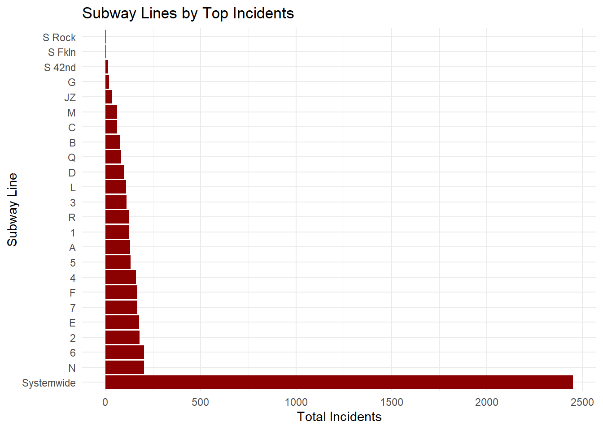

Show the code
if(!require("stringr")) install.packages("stringr")
library(stringr)
if(!require("gt")) install.packages("gt")
library(gt)
if(!require("dplyr")) install.packages("dplyr")
library(dplyr)
if(!require("ggplot2")) install.packages("ggplot2")
library(ggplot2)
if(!require("tidyverse")) install.packages("tidyverse")
library (tidyverse)
if(!require("DT")) install.packages("DT")
library(DT)
mtaincident_file <- function(filepath) {
as.data.frame(readr::read_csv(filepath, lazy = FALSE, show_col_types = FALSE))
}
# Define the full path to the file
path <- "C:\\Users\\w3038\\Downloads\\STA 9750\\Final Project\\MTA_Subway_Major_Incidents__Beginning_2020_20241026.csv"
# Load the data using the updated function
mtaincident <- mtaincident_file(path)
# Clean the data by removing empty rows in 'line' column
mtaincident <- mtaincident %>%
filter(line != "")
# Calculate total complaints by subway line
line_incident <- mtaincident %>%
group_by(line) %>%
summarise(total_incident = sum(count)) %>%
arrange(desc(total_incident))
# Plot for all subway lines with complaints in descending order
incident_line_graph <- ggplot(line_incident, aes(x = reorder(line, -total_incident), y = total_incident)) +
geom_bar(stat = "identity", fill = "darkred") +
labs(title = "Subway Lines by Top Incidents",
x = "Subway Line",
y = "Total Incidents") +
theme_minimal() +
coord_flip() # Flip for readability
# Display the plots
incident_line_graph
Show the code
# Create gt table for the top 5 lines with the most incidents
top_5_incidents <- line_incident %>%
head(5) %>%
gt() %>%
tab_header(
title = "Top 5 Subway Lines with Most Incidents"
) %>%
cols_label(
line = "Subway Line",
total_incident = "Total Incidents"
) %>%
fmt_number(
columns = vars(total_incident),
decimals = 0
)
# Create gt table for the bottom 5 lines with the least incidents
least_5_incidents <- line_incident %>%
tail(5) %>%
gt() %>%
tab_header(
title = "Top 5 Subway Lines with Least Incidents"
) %>%
cols_label(
line = "Subway Line",
total_incident = "Total Incidents"
) %>%
fmt_number(
columns = vars(total_incident),
decimals = 0
)
# Display the gt tables
top_5_incidents| Top 5 Subway Lines with Most Incidents | |
|---|---|
| Subway Line | Total Incidents |
| Systemwide | 2,450 |
| N | 203 |
| 6 | 202 |
| 2 | 179 |
| E | 178 |
Show the code
least_5_incidents| Top 5 Subway Lines with Least Incidents | |
|---|---|
| Subway Line | Total Incidents |
| JZ | 35 |
| G | 20 |
| S 42nd | 14 |
| S Fkln | 3 |
| S Rock | 2 |
Show the code
# Calculate total incidents by category and get top 5 reasons
top_reasons <- mtaincident %>%
group_by(category) %>%
summarise(total_incident = sum(count)) %>%
arrange(desc(total_incident)) %>%
head(5) %>%
gt() %>%
tab_header(
title = "Top 5 Reasons for MTA Incidents"
) %>%
cols_label(
category = "Incident Category",
total_incident = "Total Incidents"
) %>%
fmt_number(
columns = vars(total_incident),
decimals = 0
)
# Display the gt table
top_reasons| Top 5 Reasons for MTA Incidents | |
|---|---|
| Incident Category | Total Incidents |
| Persons on Trackbed/Police/Medical | 1,580 |
| Signals | 1,356 |
| Track | 774 |
| Subway Car | 418 |
| Other | 405 |
Show the code
# Load necessary libraries
if(!require("lubridate")) install.packages("lubridate")
library(lubridate)